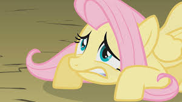
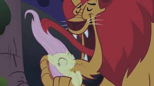
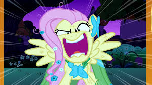

Personality
Shyness
When Fluttershy is first introduced in the series, she barely manages to tell Twilight Sparkle her own name on account of her timidity, whispering so quietly that Twilight cannot hear her and hiding her face behind her mane. However, she immediately becomes enthusiastic when she sees Spike, imploring the baby dragon to hold a conversation with her and following him and Twilight all the way to the library. In season one, Fluttershy's shy nature often annoys Rainbow Dash, particularly in Dragonshy. At the beginning of Sonic Rainboom, Fluttershy cheers as loudly as she can for Rainbow Dash but is unable to manage more than a whisper, much to the latter's exasperation. Season two shows them as closer friends despite their differences.
In Luna Eclipsed, Fluttershy sequesters herself at home in her cottage during Nightmare Night, and refuses to answer the door until she learns that her visitor is Twilight. Twilight then forcibly brings Fluttershy out to give Princess Luna a lesson in how to speak softly, with the Princess' "Royal Canterlot Voice" terrifying her.
Kindness and empathy
When the ponies venture into the Everfree Forest seeking the Elements of Harmony, she is the only pony who does not engage in a fight with a Manticore when it attacks them and relieves a thorn embedded in its front paw. She later reveals to Twilight Sparkle that she did not know about the thorn, but she shows consideration to the fierce Manticore regardless. This kind act entitles her to being the wielder of the element of kindness, as well as reveals her faithful and considerate handling of all types of animals. After humbling the dragon in Dragonshy and making it cry, she immediately consoles it and advises it to look for a more suitable place to sleep, successfully driving it away.
In Keep Calm and Flutter On, she is the only one of the Mane Six who believes Discord can be redeemed. She shows him genuine kindness and friendship, eventually leading him to change his ways.
In Filli Vanilli, when she sings for Big McIntosh in the Pony Tones, she accepts request after request for the Pony Tones to sing so she doesn't disappoint anyone.
Assertiveness
Despite her typically shy behavior, Fluttershy occasionally demonstrates more assertiveness and confidence. After Rainbow Dash's encouragement in Sonic Rainboom, she stands up to Hoops, "Dumb-Bell", and "Score" when they pick on her. In Putting Your Hoof Down, she learns to stand up for herself without resorting to anger. In Rainbow Falls, she eagerly represents Ponyville at the Games tryouts with Rainbow and Bulk Biceps.
Anger
Fluttershy has also shown a more aggressive side on rare occasions. Most of the time, Fluttershy can withstand almost anything that will make other ponies explode in anger. However, even a shy Pegasus like Fluttershy has her own limits.
Fluttershy becomes angry when reminded that Discord will win if she is not able to catch Rainbow Dash in The Return of Harmony Part 2 (referring to Discord as a "big dumb meanie"). This is one instance where Fluttershy doesn't explode in anger but expresses her anger in words.
Skills
Despite being a Pegasus, Fluttershy does not usually help with the weather and does not use her wings as much as the other winged ponies. As shown in Dragonshy, she is also scared of heights, which is ironic in that Pegasi live in the clouds most of their lives. Because of this, she instead focuses on tending to animals' care. In Party of One, Spike says, "Fluttershy [is] a Pegasus who's afraid of heights. Heh, what's up with that?"
Animal care
Fluttershy's special talent is communicating with animals, which she uses in order to provide them with food, medical attention and other forms of care when they need it. In addition, a host of animals have taken up residence in her home, which she attends to and looks after on an everyday basis. In Dragonshy, she delivers fish to a family of otters and gives worms to a family of birds to eat. In A Bird in the Hoof, she had just finished treating a mouse's broken leg before Angel reminded her of the luncheon for Princess Celestia, at which she discovers Celestia's "sick" bird, Philomena. Without the Princess' knowledge or permission, she takes the bird back to her cottage to try to help Philomena recuperate. However, her abilities prove to be ineffective in "healing" her; it is later revealed that Philomena is a phoenix and was simply nearing the end of her life cycle. In Lesson Zero, she appears to violently attack and injure a bear but is actually giving it a rigorous massage to ease the tension in one of its shoulders. In Keep Calm and Flutter On, Applejack puts Fluttershy's communication talent to use when she summons Fluttershy to negotiate the removal of a dam with a family of beavers, who had caused flooding at Sweet Apple Acres by blocking a stream with said dam.
The Stare 
"The Stare" is the name given to a particular ability Fluttershy employs when dealing with misbehaving animals. This ability is powerful as it can 'control' chickens up to her own pet bunny, Angel. However, Fluttershy doesn't really like to use the Stare. Only when someone's life is in danger or to maintain order, the Stare is used.
Rarity is the first to use this name in Stare Master, while asking Fluttershy if she had used it on Opal to get her to behave during the cat's grooming session, to which Fluttershy replies that she had not.
Flight
Fluttershy is an average flier under normal circumstances but is incapable of flight in moments of fear or stress. In Dragonshy, hearing the dragon's snore at the bottom of the mountain renders her paralyzed in midair. Fluttershy later fails to cross a chasm using her wings even after her anxiety had faded slightly. In the end, she casts aside her fear as she flies to her friends' rescue after Rainbow Dash launched a reckless assault that angered the dragon. In Feeling Pinkie Keen, she does not fly in order to escape the hydra, though she flaps her wings while running and jumping. In Putting Your Hoof Down, she doesn't fly above Sweetie Drops and Cherry Berry's wagons, and instead demands for them to get out of the way. In the episode Wonderbolts Academy, after the Twinkling Balloon that she and her friends are traveling in is destroyed, she does not remember that she can fly to safety until Cloud Chaser rescues her. Fluttershy sheepishly pulls herself out of her rescuer's grasp and hovers in mid-air, to Cloud Chaser's annoyance.
Sewing
She is familiar with sewing, a skill Applejack describes as "freaky" in Suited For Success. She helps to finish the dress Rarity had designed for herself with her friends in this episode. She dislikes a revised dress Rarity made her at first. When pressed to explain what she doesn't like, she points out uneven pleats, machine stitching, etc.
Fluttershy – element of kindness
| Kind | Pegasus |
| Sex | Female |
| Residence | Outside of Ponyville, in a cottage near the Everfree Forest Cloudsdale (formerly) |
| Occupation |
Animal caretaker School of Friendship kindness teacher Council of Friendship member Pony Tones singer (part-time) |